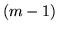
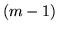

This program is used to statistically cluster words into deterministic classes. The main purpose of CLUSTER is to optimise a class map on the basis of the training text likelihood, although it can also import an existing class map and generate one of the files necessary for creating a class-based language model from the HTK language modelling tools.
Class-based language models use a reduced number of classes relative to the number of words, with each class containing one or more words, to allow a language model to be able to generalise to unseen training contexts. Class-based models also typically require less training text to produce a well-trained model than a similar complexity word model, and are often more compact due to the much reduced number of possible distinct history contexts that can be encountered in the training data.
CLUSTER takes as input a set of one or more training text gram files, which may optionally be weighted on input, and their associated word map. It then clusters the words in the word map into classes using a bigram likelihood measure. Due to the computational complexity of this task a sub-optimal greedy algorithm is used, but multiple iterations of this algorithm may be performed in order to further refine the class map, although at some point a local maximum will be reached where the class map will not change further.17.1 In practice as few as two iterations may be perfectly adequate, even with large training data sets.
The algorithm works by considering each word in the vocabulary in turn and calculating the change in bigram training text likelihood if the word was moved from its default class (see below) to each other class in turn. The word is then moved to the class which increases the likelihood the most, or it is left in its current class if no such increase is found. Each iteration of the algorithm considers each word exactly once. Because this can be a slow process, with typical execution times measured in terms of a few hours, not a few minutes, the CLUSTER tool also allows recovery files to be written at regular intervals, which contain the current class map part-way through an iteration along with associated files detailing at what point in the iteration the class map was exported. These files are not essential for operation, but might be desirable if there is a risk of a long-running process being killed via some external influence. During the execution of an iteration the tool claims no new memory,17.2 so it cannot crash in the middle of an iteration due to a lack of memory (it can, however, fail to start an iteration in the first place).
Before beginning an iteration, CLUSTER places each word either
into a default class or one specified via the -l, import
classmap, or -x, use recovery, options. The default
distribution, given  classes, is to place the most frequent 
words into singleton classes and then the remainder into the remaining
class. CLUSTER allows words to be considered in either
decreasing frequency of occurrence order, or the order they are
encountered in the word map. The popular choice is to use the former
method, although in experiments it was found that the more random
second approach typically gave better class maps after fewer
iterations in practice.17.3 The -w option specifies this choice.
classes, is to place the most frequent 
words into singleton classes and then the remainder into the remaining
class. CLUSTER allows words to be considered in either
decreasing frequency of occurrence order, or the order they are
encountered in the word map. The popular choice is to use the former
method, although in experiments it was found that the more random
second approach typically gave better class maps after fewer
iterations in practice.17.3 The -w option specifies this choice.
During execution CLUSTER will always write a logfile describing the changes it makes to the classmap, unless you explicitly disable this using the -n option. If the -v switch is used then this logfile is written in explicit English, allowing you to easily trace the execution of the clusterer; without -v then similar information is exported in a more compact format.
Two or three special classes are also defined. The sentence start and sentence end word tokens are always kept in singleton classes, and optionally the unknown word token can be kept in a singleton class too - pass the -k option.17.4 These tokens are placed in these classes on initialisation and no moves to or from these classes are ever considered.
Language model files are built using either the -p or -q options, which are effectively equivalent if using the HTK language modelling tools as black boxes. The former creates a word-given-class probabilities file, whilst the latter stores word counts and lets the language model code itself calculate the same probabilities.